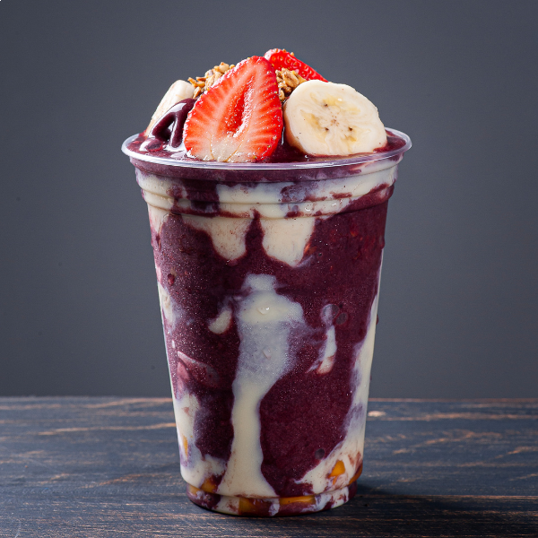
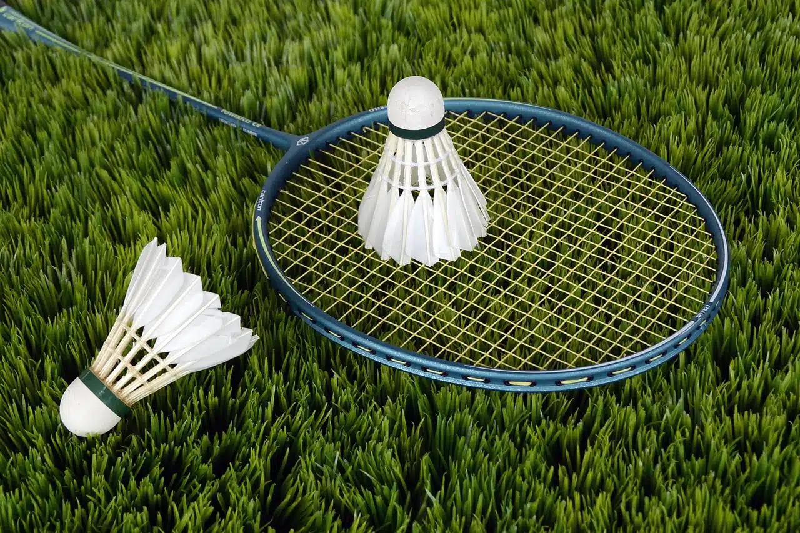
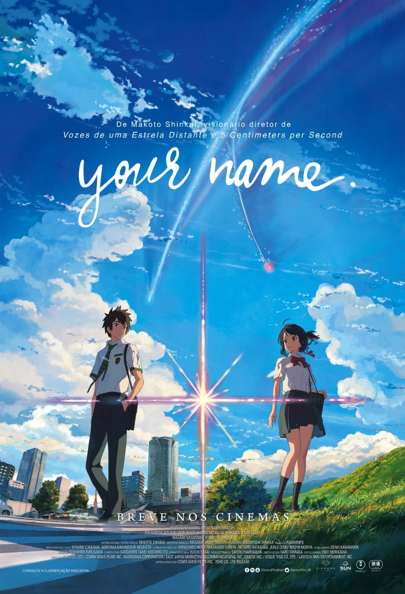

Comidas favoritas
Sushi |
Hambúrguer
|
Arroz, feijão e strogonoff |
Olá! Meu nome é MARIA e tenho 18 anos. Sou uma pessoa curiosa, dedicada e sempre aberta a aprender coisas novas. Gosto de ler livros de romance, fantasia e ação. Acredito que a troca de experiências é muito importante para o crescimento pessoal e profissional.
Sushi |
Hambúrguer
|
Arroz, feijão e strogonoff |
Brigadeiro
|
Churros recheados
|
Açaí |
kill switch |
Rainha Vermelha
|
Os garotos do cemitério |
badminton |
basquete
|
vôlei
|
Viagem De Chihiro(Filme)
|
Kimi no na wa(Filme) |
kuromukuro(Serie) |
"A imortalidade da ficção é bonita, mas cruel"--Aléatorio
"já que sou, o jeito é ser"--Aléatorio
"Se deus é por nós, quem será conta nós"-- lairtom
| Disciplinas | Professor | Carga Horária | Dias das Aulas | LINGUAGEM DE PROGRAMAÇÃO III | Everton Fernando Baro | 100 Horas | Quinta-feira | REDES DE COMPUTADORES | Klenilmar Lopes Dias | 67 Horas | Sexta-feira | TECNOLOGIAS PARA WEB I | Marcelo Rafael Borth | 100 Horas | Sexta-feira |
| MATEMÁTICA III | Alex Issamu Moriya | 100 Horas | Segunda-Feira e Sexta-feira | LÍNGUA PORTUGUESA III | Paulo Alexandre Gaiotto | 67 Horas | Segunda-Feira | GEOGRAFIA I | Diane Belusso e Ana Paula Aparecida Ferreira Alves | 100 Horas | Segunda-Feira e Quarta-Feira | FÍSICA I | Otavio Akira Sakai | 100 Horas | Terça-Feira e Quarta-Feira | SOCIOLOGIA III | Rafael Egidio Leal e Silva e Gustavo | 34 Horas | Terça-Feira | LÍNGUA INGLESA I | Marta Cristina Piovesan Marson | 67 Horas | Terça-Feira | FILOSOFIA III | Alan Rodrigo Padilha | 67 Horas | Quarta-Feira | BIOLOGIA II | Alex Sandro Barros de Souza | 67 Horas | Quarta-Feira | EDUCAÇÃO FÍSICA II | Nelma Lopes Araujo | 67 Horas | Quinta-feira |
E-mail: mariaedua233@gmail.com
Telefone: +55 (44) 8459-7109